Elicit Survey: logo proposal
Three options shown side by side: the logo in use today, and two new marks for the Survey module. All three use only the colors in elicit-brand/colors/brand-colors.css.
Current · Elicit Software logo (unchanged)
The clipboard-and-checkmark mark that Survey uses today. Keeping it is a real option: one mark for the whole platform, with nothing to roll out.
A · Choice E
Three answer options, one selected, stacked into the letter E. Every survey question comes down to choosing, and the green middle option is the respondent's answer. Its straight lines match the current logo's list lines and its ELICIT / SOFTWARE lettering.

Elicit SurveyStep 2 of 5
C · Two i's
The name already contains the idea: "elicit" has two i's. One dot is drawn as an empty radio button and the other is filled in, so the name itself shows a question being answered. The icon is the two i's alone. Because the idea lives in the lettering, the logo works with or without the icon.

Elicit SurveyStep 2 of 5